CODING AGENTS AS PIXEL WORLD MODELS
traex/GPT-5.6-Sol · 0079
点击播放 · 原生 RGB 像素
逐轮保存的候选
回放视频、检查图与代码变化。
每份候选均可单独播放。实际图片检查记录在下方工具轨迹中。
候选 01播放与检查图
点击播放 · 原生 RGB 像素

展开代码变化
--- 上一保存版本
+++ 本次保存版本
@@ -0,0 +1,263 @@
+"""Generate the locked-camera rotating-platform demonstration.
+
+Only local image processing and analytic drawing are used. The supplied photograph is
+kept verbatim as frame zero; later frames reconstruct the small areas uncovered by the
+moving apparatus and render a rigid, constant-speed clockwise rotation.
+"""
+from pathlib import Path
+import math
+import cv2
+import numpy as np
+from PIL import Image, ImageDraw, ImageFilter
+import artifact_io
+
+CASE_DIR = Path(__file__).resolve().parent
+S = 4 # antialiasing scale for analytic overlays
+W, H = 256, 144
+
+
+def soft_mask(draw_fn, blur=0.0):
+ im = Image.new("L", (W*S, H*S), 0)
+ d = ImageDraw.Draw(im)
+ draw_fn(d)
+ if blur:
+ im = im.filter(ImageFilter.GaussianBlur(blur*S))
+ return np.asarray(im.resize((W, H), Image.Resampling.LANCZOS), dtype=np.float32) / 255.0
+
+
+def fill_old_shadows(src):
+ """Reconstruct wall behind the initial projected silhouettes by row interpolation."""
+ m = np.zeros((H, W), np.uint8)
+ # Mug body and its long handle shadow, plus the separate block shadow.
+ cv2.fillPoly(m, [np.array([(24,18),(53,26),(88,47),(89,91),(79,99),
+ (126,96),(130,108),(31,110),(27,99),(0,100),
+ (0,83),(25,78)], np.int32)], 255)
+ cv2.fillPoly(m, [np.array([(91,53),(108,53),(109,98),(129,98),
+ (130,109),(82,109),(82,97),(91,96)], np.int32)], 255)
+ # Never alter the tabletop with this interpolation.
+ yy = np.arange(H)[:, None]
+ horizon = 112.0 - 0.075*np.arange(W)[None, :]
+ m[yy >= horizon] = 0
+ mask = m > 0
+ out = src.astype(np.float32).copy()
+ # Linear interpolation between the nearest genuinely visible wall pixels on each row.
+ for y in range(H):
+ row = mask[y]
+ x = 0
+ while x < W:
+ if not row[x]:
+ x += 1
+ continue
+ a = x
+ while x < W and row[x]:
+ x += 1
+ b = x - 1
+ l = max(0, a-1); r = min(W-1, b+1)
+ # If one edge is itself extremely dark, reach a little farther for wall color.
+ while l > 1 and mask[y, l]: l -= 1
+ while r < W-2 and mask[y, r]: r += 1
+ for xx in range(a, b+1):
+ t = (xx-a+1) / (b-a+2)
+ out[y, xx] = (1-t)*src[y, l] + t*src[y, r]
+ # Soften only the replacement, preserving all original photographic texture elsewhere.
+ smooth = cv2.GaussianBlur(out, (0,0), 2.2)
+ feather = cv2.GaussianBlur(m.astype(np.float32)/255.0, (0,0), 1.4)[...,None]
+ return src*(1-feather) + smooth*feather
+
+
+def make_clean_plate(src):
+ plate = fill_old_shadows(src)
+ # Remove the initial mug, block and turntable from the tabletop/wall. Telea works well
+ # here because the region is tiny and will be covered again by the rendered platform.
+ bgr = cv2.cvtColor(np.uint8(np.clip(plate,0,255)), cv2.COLOR_RGB2BGR)
+ m = np.zeros((H,W), np.uint8)
+ cv2.rectangle(m, (116,77), (184,134), 255, -1)
+ bgr = cv2.inpaint(bgr, m, 7, cv2.INPAINT_TELEA)
+ return cv2.cvtColor(bgr, cv2.COLOR_BGR2RGB).astype(np.float32)
+
+
+def composite(base, color, alpha):
+ a = np.clip(alpha,0,1)[...,None]
+ return base*(1-a) + np.asarray(color, np.float32)*a
+
+
+def shadow_layer(theta, mug_x, mug_base, block_x, block_base):
+ """Large soft wall projections from a low spotlight at camera right."""
+ def draw(d):
+ sc = S
+ # Mug projection: same tall cylindrical silhouette, translated by its orbital x.
+ dx = 1.82*(mug_x-144.0)
+ dy = 0.30*(mug_base-116.0)
+ p = [(29+dx,28+dy),(55+dx,31+dy),(78+dx,43+dy),(86+dx,51+dy),
+ (86+dx,90+dy),(78+dx,98+dy),(39+dx,98+dy),(29+dx,91+dy)]
+ d.polygon([(round(x*sc),round(y*sc)) for x,y in p], fill=244)
+ # The mug handle shadow revolves around the body. Its large projection changes from
+ # a broad loop to a nearly edge-on narrow bar.
+ ca, sa = math.cos(theta), math.sin(theta)
+ hx = 82+dx + 24*(1-ca) # initial loop extends to the right of body shadow
+ hy = 96+dy - 13*sa
+ hw = 43*abs(ca) + 9
+ hh = 11 + 13*abs(sa)
+ box = [(hx-hw*0.08)*sc,(hy-hh/2)*sc,(hx+hw)*sc,(hy+hh/2)*sc]
+ d.rounded_rectangle(tuple(map(round,box)), radius=max(2,round(4*sc)), fill=225)
+ # Hollow center, kept subtle because projected penumbra nearly closes it.
+ ib = [(hx+6)*sc,(hy-hh/2+3)*sc,(hx+hw-6)*sc,(hy+hh/2-3)*sc]
+ if ib[2] > ib[0] and ib[3] > ib[1]:
+ d.rounded_rectangle(tuple(map(round,ib)), radius=round(2*sc), fill=70)
+ # Blue block shadow, narrower and sharply rectangular.
+ bx = 101 + 1.78*(block_x-163.0)
+ by = 101 + 0.3*(block_base-116.0)
+ bw = 13 + 6*abs(math.sin(theta))
+ lean = -3*math.sin(theta)
+ d.polygon([(round((bx-bw/2+lean)*sc),round((by-47)*sc)),
+ (round((bx+bw/2+lean)*sc),round((by-47)*sc)),
+ (round((bx+bw/2)*sc),round(by*sc)),
+ (round((bx-bw/2)*sc),round(by*sc))], fill=224)
+ return soft_mask(draw, blur=2.0)
+
+
+def overlay_rgba(frame, layer):
+ arr = np.asarray(layer.resize((W,H), Image.Resampling.LANCZOS), dtype=np.float32)
+ a = arr[...,3:4]/255.0
+ return frame*(1-a) + arr[...,:3]*a
+
+
+def draw_platform(theta):
+ im = Image.new("RGBA", (W*S,H*S), (0,0,0,0)); d=ImageDraw.Draw(im)
+ q=lambda b: tuple(round(v*S) for v in b)
+ # Cylindrical side and lower lip.
+ d.ellipse(q((120,111,182,135)), fill=(8,8,7,245))
+ d.rectangle(q((120,117,182,127)), fill=(8,8,7,245))
+ d.ellipse(q((120,118,182,135)), fill=(5,5,5,250))
+ # A faint right-side reflection, fixed in the room coordinates.
+ d.ellipse(q((157,119,180,132)), fill=(70,67,64,95))
+ d.ellipse(q((120,106,182,126)), fill=(20,20,16,255), outline=(3,3,3,255), width=round(1*S))
+ # Rotating subtle radial seams/markings make the disk's clockwise motion readable.
+ cx,cy=151,116
+ for off,alpha in [(0,85),(math.pi,45),(1.18,35)]:
+ a=theta+off
+ ex=cx+29*math.cos(a); ey=cy+8.2*math.sin(a)
+ d.line(q((cx,cy,ex,ey)), fill=(97,91,69,alpha), width=max(1,round(.65*S)))
+ # fixed warm glint from spotlight
+ d.ellipse(q((165,113,180,121)), fill=(90,83,54,80))
+ return im
+
+
+def draw_handle(d, cx, base, theta, front):
+ # Handle starts on mug's left and rotates rigidly clockwise with it.
+ vx=-math.cos(theta); vy=-0.34*math.sin(theta)
+ is_front = vy > 0
+ if is_front != front: return
+ side_x=cx + 13*vx
+ side_y=base-19 + 7*vy
+ wid=8 + 8*abs(vx); hei=17 - 5*abs(math.sin(theta))
+ box=((side_x-wid/2)*S,(side_y-hei/2)*S,(side_x+wid/2)*S,(side_y+hei/2)*S)
+ # dark outer ceramic, warm inner edge
+ d.ellipse(tuple(map(round,box)), fill=(45,27,4,255), outline=(8,6,4,255), width=round(1.2*S))
+ inset=3.0
+ ib=((side_x-wid/2+inset)*S,(side_y-hei/2+inset)*S,
+ (side_x+wid/2-inset)*S,(side_y+hei/2-inset)*S)
+ if ib[2]>ib[0] and ib[3]>ib[1]: d.ellipse(tuple(map(round,ib)), fill=(0,0,0,0))
+
+
+def mug_layer(cx, base, theta):
+ im=Image.new("RGBA",(W*S,H*S),(0,0,0,0)); d=ImageDraw.Draw(im)
+ draw_handle(d,cx,base,theta,False)
+ # Antialiased body mask at rendering resolution.
+ mask=Image.new("L",im.size,0); md=ImageDraw.Draw(mask)
+ md.rectangle((round((cx-14)*S),round((base-32)*S),round((cx+14)*S),round((base-5)*S)),fill=255)
+ md.ellipse((round((cx-14)*S),round((base-11)*S),round((cx+14)*S),round((base+1)*S)),fill=255)
+ # Lit yellow ceramic gradient, fixed relative to the spotlight/camera.
+ yy,xx=np.mgrid[0:H*S,0:W*S]
+ u=(xx/S-(cx-14))/28
+ light=.07 + .94*np.exp(-((u-.76)/.34)**2)
+ # warm specular stripe on right-facing curvature
+ spec=.33*np.exp(-((u-.79)/.105)**2)
+ r=np.clip(205*light+130*spec,0,255)
+ g=np.clip(151*light+120*spec,0,247)
+ b=np.clip(3+12*light+42*spec,0,80)
+ rgba=np.dstack((r,g,b,np.asarray(mask))).astype(np.uint8)
+ im=Image.alpha_composite(im,Image.fromarray(rgba,"RGBA")); d=ImageDraw.Draw(im)
+ # Dark rim and visible coffee/interior.
+ d.ellipse((round((cx-14)*S),round((base-37)*S),round((cx+14)*S),round((base-29)*S)),
+ fill=(12,8,2,255), outline=(3,2,1,255), width=max(1,round(1*S)))
+ d.ellipse((round((cx-11.5)*S),round((base-35.3)*S),round((cx+11.5)*S),round((base-30.5)*S)),
+ fill=(28,17,2,255))
+ # lit inner rim on far/right edge
+ d.arc((round((cx-13)*S),round((base-36)*S),round((cx+13)*S),round((base-29)*S)),
+ 5,170,fill=(173,116,0,255),width=max(1,round(1.2*S)))
+ draw_handle(d,cx,base,theta,True)
+ return im
+
+
+def block_layer(cx, base, theta):
+ im=Image.new("RGBA",(W*S,H*S),(0,0,0,0)); d=ImageDraw.Draw(im)
+ # Project a small 8x7 rectangular footprint on the platform plane.
+ co,si=math.cos(theta),math.sin(theta)
+ pts=[]
+ for x,y in [(-4,-3.5),(4,-3.5),(4,3.5),(-4,3.5)]:
+ X=x*co-y*si; Y=.34*(x*si+y*co)
+ pts.append((cx+X,base+Y))
+ order=sorted(range(4),key=lambda i:pts[i][1],reverse=True)
+ front=order[:2]
+ # Back face first, then two differently illuminated visible faces.
+ poly=[pts[i] for i in range(4)]
+ top=[(round(x*S),round((y-30)*S)) for x,y in poly]
+ d.polygon(top,fill=(83,240,246,255))
+ edges=[]
+ for i in range(4):
+ j=(i+1)%4
+ midy=(pts[i][1]+pts[j][1])/2
+ edges.append((midy,i,j))
+ for k,(_,i,j) in enumerate(sorted(edges)[-2:]):
+ p1,p2=pts[i],pts[j]
+ # right-facing edge catches cyan spotlight, other face is blue-green.
+ mx=(p1[0]+p2[0])/2
+ col=(43,205,224,255) if mx>=cx else (10,99,158,255)
+ face=[(p1[0]*S,(p1[1]-30)*S),(p2[0]*S,(p2[1]-30)*S),
+ (p2[0]*S,p2[1]*S),(p1[0]*S,p1[1]*S)]
+ d.polygon([(round(x),round(y)) for x,y in face],fill=col)
+ # narrow brilliant edge and deep blue lower contact shading
+ xs=[p[0] for p in pts]; ys=[p[1] for p in pts]
+ d.line((round(max(xs)*S),round((min(ys)-30)*S),round(max(xs)*S),round(max(ys)*S)),
+ fill=(154,255,255,255),width=max(1,round(.65*S)))
+ d.rectangle((round(min(xs)*S),round((base-7)*S),round(max(xs)*S),round((base+2)*S)),
+ fill=(6,67,134,145))
+ return im
+
+
+def make_frames():
+ src=np.asarray(Image.open(CASE_DIR/'first_frame.png').convert('RGB'),dtype=np.uint8)
+ plate=make_clean_plate(src)
+ frames=[src.copy()]
+ for i in range(1,20):
+ theta=2*math.pi*i/20.0 # 18 degrees/frame, clockwise, constant speed
+ co,si=math.cos(theta),math.sin(theta)
+ # Rigid rotation on a foreshortened horizontal platform.
+ mug_x=151 + (-7)*co
+ mug_base=116 + (-7)*si*.34
+ block_x=151 + 12*co
+ block_base=116 + 12*si*.34
+ frame=plate.copy()
+ # Shadows lie on the wall, behind the platform and objects.
+ sh=shadow_layer(theta,mug_x,mug_base,block_x,block_base)
+ frame *= (1.0 - 0.94*sh[...,None])
+ frame=overlay_rgba(frame,draw_platform(theta))
+ # Correct depth ordering on the platform: farther object first.
+ objects=[(mug_base,'mug'),(block_base,'block')]
+ for _,name in sorted(objects):
+ layer=mug_layer(mug_x,mug_base,theta) if name=='mug' else block_layer(block_x,block_base,theta)
+ frame=overlay_rgba(frame,layer)
+ # Dark front lip occludes the feet very slightly, integrating them into the turntable.
+ lip=Image.new('RGBA',(W*S,H*S),(0,0,0,0)); ld=ImageDraw.Draw(lip)
+ ld.arc(tuple(round(v*S) for v in (120,115,182,134)),0,180,fill=(3,3,3,210),width=round(1.2*S))
+ frame=overlay_rgba(frame,lip)
+ frames.append(np.uint8(np.clip(frame,0,255)))
+ return np.stack(frames)
+
+
+if __name__ == '__main__':
+ frames=make_frames()
+ assert frames.shape==(20,144,256,3) and frames.dtype==np.uint8
+ assert np.array_equal(frames[0],np.asarray(Image.open(CASE_DIR/'first_frame.png').convert('RGB')))
+ artifact_io.save(frames,CASE_DIR)
候选 02播放与检查图
点击播放 · 原生 RGB 像素

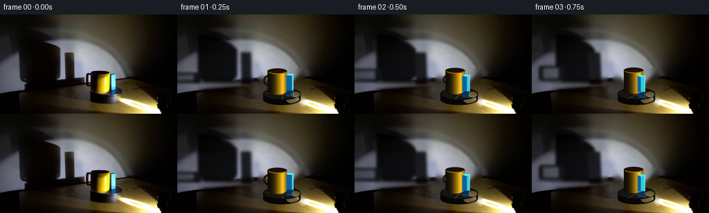
展开代码变化
--- 上一保存版本
+++ 本次保存版本
@@ -94,14 +94,16 @@
# The mug handle shadow revolves around the body. Its large projection changes from
# a broad loop to a nearly edge-on narrow bar.
ca, sa = math.cos(theta), math.sin(theta)
- hx = 82+dx + 24*(1-ca) # initial loop extends to the right of body shadow
+ # In the source frame the real handle is on the left, so its projection also
+ # begins on the left; half a turn later it has swept around to the right.
+ hx = 28+dx + 27*(1-ca)
hy = 96+dy - 13*sa
hw = 43*abs(ca) + 9
hh = 11 + 13*abs(sa)
- box = [(hx-hw*0.08)*sc,(hy-hh/2)*sc,(hx+hw)*sc,(hy+hh/2)*sc]
+ box = [(hx-hw)*sc,(hy-hh/2)*sc,(hx+hw*0.08)*sc,(hy+hh/2)*sc]
d.rounded_rectangle(tuple(map(round,box)), radius=max(2,round(4*sc)), fill=225)
# Hollow center, kept subtle because projected penumbra nearly closes it.
- ib = [(hx+6)*sc,(hy-hh/2+3)*sc,(hx+hw-6)*sc,(hy+hh/2-3)*sc]
+ ib = [(hx-hw+6)*sc,(hy-hh/2+3)*sc,(hx-6)*sc,(hy+hh/2-3)*sc]
if ib[2] > ib[0] and ib[3] > ib[1]:
d.rounded_rectangle(tuple(map(round,ib)), radius=round(2*sc), fill=70)
# Blue block shadow, narrower and sharply rectangular.
@@ -126,20 +128,20 @@
im = Image.new("RGBA", (W*S,H*S), (0,0,0,0)); d=ImageDraw.Draw(im)
q=lambda b: tuple(round(v*S) for v in b)
# Cylindrical side and lower lip.
- d.ellipse(q((120,111,182,135)), fill=(8,8,7,245))
- d.rectangle(q((120,117,182,127)), fill=(8,8,7,245))
- d.ellipse(q((120,118,182,135)), fill=(5,5,5,250))
+ d.ellipse(q((124,110,178,131)), fill=(8,8,7,245))
+ d.rectangle(q((124,116,178,124)), fill=(8,8,7,245))
+ d.ellipse(q((124,116,178,131)), fill=(5,5,5,250))
# A faint right-side reflection, fixed in the room coordinates.
- d.ellipse(q((157,119,180,132)), fill=(70,67,64,95))
- d.ellipse(q((120,106,182,126)), fill=(20,20,16,255), outline=(3,3,3,255), width=round(1*S))
+ d.ellipse(q((157,117,176,129)), fill=(70,67,64,95))
+ d.ellipse(q((124,106,178,124)), fill=(20,20,16,255), outline=(3,3,3,255), width=round(1*S))
# Rotating subtle radial seams/markings make the disk's clockwise motion readable.
cx,cy=151,116
for off,alpha in [(0,85),(math.pi,45),(1.18,35)]:
a=theta+off
- ex=cx+29*math.cos(a); ey=cy+8.2*math.sin(a)
+ ex=cx+25*math.cos(a); ey=cy+7.2*math.sin(a)
d.line(q((cx,cy,ex,ey)), fill=(97,91,69,alpha), width=max(1,round(.65*S)))
# fixed warm glint from spotlight
- d.ellipse(q((165,113,180,121)), fill=(90,83,54,80))
+ d.ellipse(q((164,112,177,120)), fill=(90,83,54,80))
return im
@@ -250,7 +252,7 @@
frame=overlay_rgba(frame,layer)
# Dark front lip occludes the feet very slightly, integrating them into the turntable.
lip=Image.new('RGBA',(W*S,H*S),(0,0,0,0)); ld=ImageDraw.Draw(lip)
- ld.arc(tuple(round(v*S) for v in (120,115,182,134)),0,180,fill=(3,3,3,210),width=round(1.2*S))
+ ld.arc(tuple(round(v*S) for v in (124,113,178,131)),0,180,fill=(3,3,3,210),width=round(1.2*S))
frame=overlay_rgba(frame,lip)
frames.append(np.uint8(np.clip(frame,0,255)))
return np.stack(frames)
可观测工具轨迹
实际执行的命令与返回图片。
命令 1exit 0
/bin/bash -lc 'cat prompt.txt'
命令 2exit 0
/bin/bash -lc 'cat GENERATION_RULES.md'
命令 3exit 0
/bin/bash -lc "find . -maxdepth 2 -type f -printf '%p %s bytes\\n' | sort && python3 - <<'PY'
from PIL import Image
im=Image.open('first_frame.png')
print('IMAGE', im.size, im.mode)
PY"命令 4exit 0
/bin/bash -lc "python3 - <<'PY'
from PIL import Image, ImageEnhance, ImageDraw
im=Image.open('first_frame.png')
# nearest enlargement
im.resize((1024,576),Image.Resampling.NEAREST).save('.tmp/zoom.png')
ImageEnhance.Brightness(im).enhance(2.2).resize((1024,576),Image.Resampling.NEAREST).save('.tmp/bright_zoom.png')
# grid coordinate overlay every 16 source pixels
x=im.resize((1024,576),Image.Resampling.NEAREST)
d=ImageDraw.Draw(x)
for sx in range(0,256,16):
d.line((sx*4,0,sx*4,576), fill=(255,0,0), width=1); d.text((sx*4+2,2),str(sx),fill=(255,80,80))
for sy in range(0,144,16):
d.line((0,sy*4,1024,sy*4), fill=(255,0,0), width=1); d.text((2,sy*4+2),str(sy),fill=(255,80,80))
x.save('.tmp/grid.png')
PY"命令 5exit 0
/bin/bash -lc "sed -n '1,260p' artifact_io.py && python3 - <<'PY' mods=['cv2','numpy','PIL','scipy','skimage','imageio'] for m in mods: try: x=__import__(m); print(m, getattr(x,'__version__','ok')) except Exception as e: print(m,'NO',e) PY"
命令 6exit 0
/bin/bash -lc "python3 - <<'PY'
from PIL import Image,ImageDraw
im=Image.open('first_frame.png')
# crops object/platform and wall
for name,box in [('obj',(105,70,185,132)),('wall',(0,10,210,115)),('plat',(105,100,185,140)),('table',(20,90,240,144))]:
im.crop(box).resize(((box[2]-box[0])*8,(box[3]-box[1])*8),Image.Resampling.NEAREST).save(f'.tmp/{name}.png')
PY"命令 7exit 0
/bin/bash -lc "cat > .tmp/test_bg.py <<'PY'
import cv2, numpy as np
from PIL import Image
im=np.array(Image.open('first_frame.png'))
mask=np.zeros(im.shape[:2],np.uint8)
# wall shadows
pts=[np.array([[15,18],[51,27],[89,46],[91,91],[80,99],[125,96],[126,109],[0,111],[0,86],[24,80]],np.int32),
np.array([[91,49],[109,49],[110,101],[129,101],[129,111],[83,111],[83,96],[91,96]],np.int32)]
for p in pts: cv2.fillPoly(mask,[p],255)
# object and platform
cv2.rectangle(mask,(118,78),(180,132),255,-1)
# Inpaint each maybe telea
for r in [3,7,15]:
out=cv2.inpaint(cv2.cvtColor(im,cv2.COLOR_RGB2BGR),mask,r,cv2.INPAINT_TELEA)
out=cv2.cvtColor(out,cv2.COLOR_BGR2RGB)
Image.fromarray(out).save(f'.tmp/bg{r}.png')
Image.fromarray(mask).save('.tmp/mask.png')
PY
python3 .tmp/test_bg.py"命令 8exit 0
/bin/bash -lc "python3 - <<'PY'
import cv2,numpy as np
from PIL import Image
im=cv2.imread('first_frame.png')
for k in [0,1]:
mask=np.zeros(im.shape[:2],np.uint8)
# obj plus platform only
cv2.rectangle(mask,(116,77),(184,134),255,-1)
if k: cv2.ellipse(mask,(151,118),(36,18),0,0,360,255,-1)
out=cv2.inpaint(im,mask,7,cv2.INPAINT_TELEA)
cv2.imwrite(f'.tmp/objclean{k}.png',out)
PY"命令 9exit 0
/bin/bash -lc "cat > .tmp/clean.py <<'PY'
import cv2,numpy as np
from PIL import Image
im=cv2.cvtColor(cv2.imread('first_frame.png'),cv2.COLOR_BGR2RGB).astype(np.float32)
h,w=im.shape[:2]
mask=np.zeros((h,w),np.float32)
# all dynamic objects/shadows incl platform wall shadow
polys=[[(20,19),(58,29),(91,49),(91,92),(83,99),(128,96),(129,110),(2,111),(0,86),(26,80)],[(91,52),(108,52),(109,99),(129,99),(129,111),(82,111),(82,96),(91,96)]]
for p in polys: cv2.fillPoly(mask,[np.array(p,np.int32)],1)
# moving objects, platform region
cv2.rectangle(mask,(115,76),(184,134),1,-1)
# Only clean wall shadows y<112 using normalized convolution
valid=1-mask
for sig in [8,15,25]:
den=cv2.GaussianBlur(valid,(0,0),sig)+1e-5
rec=np.stack([cv2.GaussianBlur(im[:,:,c]*valid,(0,0),sig)/den for c in range(3)],2)
out=im.copy()
# use progressively only masked wall
a=cv2.GaussianBlur(mask,(0,0),2)[:,:,None]
# object/table separately not this rec
wall=((np.indices((h,w))[0]<111)[:,:,None])
out=np.where(wall, im*(1-a)+rec*a,im)
Image.fromarray(np.uint8(np.clip(out,0,255))).save(f'.tmp/norm{sig}.png')
PY
python3 .tmp/clean.py"命令 10exit 0
/bin/bash -lc "python3 - <<'PY'
from PIL import Image
im=Image.open('first_frame.png')
pts=[(5,5),(50,5),(100,5),(150,5),(200,5),(250,5),(10,30),(50,30),(100,30),(150,30),(200,30),(10,60),(50,60),(80,60),(120,60),(160,60),(200,60),(10,90),(50,90),(80,90),(115,90),(175,90),(200,90),(10,105),(50,105),(80,105),(115,105),(175,105),(200,105),(50,120),(100,120),(190,120),(220,120)]
for p in pts: print(p, im.getpixel(p))
PY"命令 11exit 0
/bin/bash -lc "cat > generate.py <<'PY'
\"\"\"Generate the locked-camera rotating-platform demonstration.
Only local image processing and analytic drawing are used. The supplied photograph is
kept verbatim as frame zero; later frames reconstruct the small areas uncovered by the
moving apparatus and render a rigid, constant-speed clockwise rotation.
\"\"\"
from pathlib import Path
import math
import cv2
import numpy as np
from PIL import Image, ImageDraw, ImageFilter
import artifact_io
CASE_DIR = Path(__file__).resolve().parent
S = 4 # antialiasing scale for analytic overlays
W, H = 256, 144
def soft_mask(draw_fn, blur=0.0):
im = Image.new(\"L\", (W*S, H*S), 0)
d = ImageDraw.Draw(im)
draw_fn(d)
if blur:
im = im.filter(ImageFilter.GaussianBlur(blur*S))
return np.asarray(im.resize((W, H), Image.Resampling.LANCZOS), dtype=np.float32) / 255.0
def fill_old_shadows(src):
\"\"\"Reconstruct wall behind the initial projected silhouettes by row interpolation.\"\"\"
m = np.zeros((H, W), np.uint8)
# Mug body and its long handle shadow, plus the separate block shadow.
cv2.fillPoly(m, [np.array([(24,18),(53,26),(88,47),(89,91),(79,99),
(126,96),(130,108),(31,110),(27,99),(0,100),
(0,83),(25,78)], np.int32)], 255)
cv2.fillPoly(m, [np.array([(91,53),(108,53),(109,98),(129,98),
(130,109),(82,109),(82,97),(91,96)], np.int32)], 255)
# Never alter the tabletop with this interpolation.
yy = np.arange(H)[:, None]
horizon = 112.0 - 0.075*np.arange(W)[None, :]
m[yy >= horizon] = 0
mask = m > 0
out = src.astype(np.float32).copy()
# Linear interpolation between the nearest genuinely visible wall pixels on each row.
for y in range(H):
row = mask[y]
x = 0
while x < W:
if not row[x]:
x += 1
continue
a = x
while x < W and row[x]:
x += 1
b = x - 1
l = max(0, a-1); r = min(W-1, b+1)
# If one edge is itself extremely dark, reach a little farther for wall color.
while l > 1 and mask[y, l]: l -= 1
while r < W-2 and mask[y, r]: r += 1
for xx in range(a, b+1):
t = (xx-a+1) / (b-a+2)
out[y, xx] = (1-t)*src[y, l] + t*src[y, r]
# Soften only the replacement, preserving all original photographic texture elsewhere.
smooth = cv2.GaussianBlur(out, (0,0), 2.2)
feather = cv2.GaussianBlur(m.astype(np.float32)/255.0, (0,0), 1.4)[...,None]
return src*(1-feather) + smooth*feather
def make_clean_plate(src):
plate = fill_old_shadows(src)
# Remove the initial mug, block and turntable from the tabletop/wall. Telea works well
# here because the region is tiny and will be covered again by the rendered platform.
bgr = cv2.cvtColor(np.uint8(np.clip(plate,0,255)), cv2.COLOR_RGB2BGR)
m = np.zeros((H,W), np.uint8)
cv2.rectangle(m, (116,77), (184,134), 255, -1)
bgr = cv2.inpaint(bgr, m, 7, cv2.INPAINT_TELEA)
return cv2.cvtColor(bgr, cv2.COLOR_BGR2RGB).astype(np.float32)
def composite(base, color, alpha):
a = np.clip(alpha,0,1)[...,None]
return base*(1-a) + np.asarray(color, np.float32)*a
def shadow_layer(theta, mug_x, mug_base, block_x, block_base):
\"\"\"Large soft wall projections from a low spotlight at camera right.\"\"\"
def draw(d):
sc = S
# Mug projection: same tall cylindrical silhouette, translated by its orbital x.
dx = 1.82*(mug_x-144.0)
dy = 0.30*(mug_base-116.0)
p = [(29+dx,28+dy),(55+dx,31+dy),(78+dx,43+dy),(86+dx,51+dy),
(86+dx,90+dy),(78+dx,98+dy),(39+dx,98+dy),(29+dx,91+dy)]
d.polygon([(round(x*sc),round(y*sc)) for x,y in p], fill=244)
# The mug handle shadow revolves around the body. Its large projection changes from
# a broad loop to a nearly edge-on narrow bar.
ca, sa = math.cos(theta), math.sin(theta)
hx = 82+dx + 24*(1-ca) # initial loop extends to the right of body shadow
hy = 96+dy - 13*sa
hw = 43*abs(ca) + 9
hh = 11 + 13*abs(sa)
box = [(hx-hw*0.08)*sc,(hy-hh/2)*sc,(hx+hw)*sc,(hy+hh/2)*sc]
d.rounded_rectangle(tuple(map(round,box)), radius=max(2,round(4*sc)), fill=225)
# Hollow center, kept subtle because projected penumbra nearly closes it.
ib = [(hx+6)*sc,(hy-hh/2+3)*sc,(hx+hw-6)*sc,(hy+hh/2-3)*sc]
if ib[2] > ib[0] and ib[3] > ib[1]:
d.rounded_rectangle(tuple(map(round,ib)), radius=round(2*sc), fill=70)
# Blue block shadow, narrower and sharply rectangular.
bx = 101 + 1.78*(block_x-163.0)
by = 101 + 0.3*(block_base-116.0)
bw = 13 + 6*abs(math.sin(theta))
lean = -3*math.sin(theta)
d.polygon([(round((bx-bw/2+lean)*sc),round((by-47)*sc)),
(round((bx+bw/2+lean)*sc),round((by-47)*sc)),
(round((bx+bw/2)*sc),round(by*sc)),
(round((bx-bw/2)*sc),round(by*sc))], fill=224)
return soft_mask(draw, blur=2.0)
def overlay_rgba(frame, layer):
arr = np.asarray(layer.resize((W,H), Image.Resampling.LANCZOS), dtype=np.float32)
a = arr[...,3:4]/255.0
return frame*(1-a) + arr[...,:3]*a
def draw_platform(theta):
im = Image.new(\"RGBA\", (W*S,H*S), (0,0,0,0)); d=ImageDraw.Draw(im)
q=lambda b: tuple(round(v*S) for v in b)
# Cylindrical side and lower lip.
d.ellipse(q((120,111,182,135)), fill=(8,8,7,245))
d.rectangle(q((120,117,182,127)), fill=(8,8,7,245))
d.ellipse(q((120,118,182,135)), fill=(5,5,5,250))
# A faint right-side reflection, fixed in the room coordinates.
d.ellipse(q((157,119,180,132)), fill=(70,67,64,95))
d.ellipse(q((120,106,182,126)), fill=(20,20,16,255), outline=(3,3,3,255), width=round(1*S))
# Rotating subtle radial seams/markings make the disk's clockwise motion readable.
cx,cy=151,116
for off,alpha in [(0,85),(math.pi,45),(1.18,35)]:
a=theta+off
ex=cx+29*math.cos(a); ey=cy+8.2*math.sin(a)
d.line(q((cx,cy,ex,ey)), fill=(97,91,69,alpha), width=max(1,round(.65*S)))
# fixed warm glint from spotlight
d.ellipse(q((165,113,180,121)), fill=(90,83,54,80))
return im
def draw_handle(d, cx, base, theta, front):
# Handle starts on mug's left and rotates rigidly clockwise with it.
vx=-math.cos(theta); vy=-0.34*math.sin(theta)
is_front = vy > 0
if is_front "'!= front: return
side_x=cx + 13*vx
side_y=base-19 + 7*vy
wid=8 + 8*abs(vx); hei=17 - 5*abs(math.sin(theta))
box=((side_x-wid/2)*S,(side_y-hei/2)*S,(side_x+wid/2)*S,(side_y+hei/2)*S)
# dark outer ceramic, warm inner edge
d.ellipse(tuple(map(round,box)), fill=(45,27,4,255), outline=(8,6,4,255), width=round(1.2*S))
inset=3.0
ib=((side_x-wid/2+inset)*S,(side_y-hei/2+inset)*S,
(side_x+wid/2-inset)*S,(side_y+hei/2-inset)*S)
if ib[2]>ib[0] and ib[3]>ib[1]: d.ellipse(tuple(map(round,ib)), fill=(0,0,0,0))
def mug_layer(cx, base, theta):
im=Image.new("RGBA",(W*S,H*S),(0,0,0,0)); d=ImageDraw.Draw(im)
draw_handle(d,cx,base,theta,False)
# Antialiased body mask at rendering resolution.
mask=Image.new("L",im.size,0); md=ImageDraw.Draw(mask)
md.rectangle((round((cx-14)*S),round((base-32)*S),round((cx+14)*S),round((base-5)*S)),fill=255)
md.ellipse((round((cx-14)*S),round((base-11)*S),round((cx+14)*S),round((base+1)*S)),fill=255)
# Lit yellow ceramic gradient, fixed relative to the spotlight/camera.
yy,xx=np.mgrid[0:H*S,0:W*S]
u=(xx/S-(cx-14))/28
light=.07 + .94*np.exp(-((u-.76)/.34)**2)
# warm specular stripe on right-facing curvature
spec=.33*np.exp(-((u-.79)/.105)**2)
r=np.clip(205*light+130*spec,0,255)
g=np.clip(151*light+120*spec,0,247)
b=np.clip(3+12*light+42*spec,0,80)
rgba=np.dstack((r,g,b,np.asarray(mask))).astype(np.uint8)
im=Image.alpha_composite(im,Image.fromarray(rgba,"RGBA")); d=ImageDraw.Draw(im)
# Dark rim and visible coffee/interior.
d.ellipse((round((cx-14)*S),round((base-37)*S),round((cx+14)*S),round((base-29)*S)),
fill=(12,8,2,255), outline=(3,2,1,255), width=max(1,round(1*S)))
d.ellipse((round((cx-11.5)*S),round((base-35.3)*S),round((cx+11.5)*S),round((base-30.5)*S)),
fill=(28,17,2,255))
# lit inner rim on far/right edge
d.arc((round((cx-13)*S),round((base-36)*S),round((cx+13)*S),round((base-29)*S)),
5,170,fill=(173,116,0,255),width=max(1,round(1.2*S)))
draw_handle(d,cx,base,theta,True)
return im
def block_layer(cx, base, theta):
im=Image.new("RGBA",(W*S,H*S),(0,0,0,0)); d=ImageDraw.Draw(im)
# Project a small 8x7 rectangular footprint on the platform plane.
co,si=math.cos(theta),math.sin(theta)
pts=[]
for x,y in [(-4,-3.5),(4,-3.5),(4,3.5),(-4,3.5)]:
X=x*co-y*si; Y=.34*(x*si+y*co)
pts.append((cx+X,base+Y))
order=sorted(range(4),key=lambda i:pts[i][1],reverse=True)
front=order[:2]
# Back face first, then two differently illuminated visible faces.
poly=[pts[i] for i in range(4)]
top=[(round(x*S),round((y-30)*S)) for x,y in poly]
d.polygon(top,fill=(83,240,246,255))
edges=[]
for i in range(4):
j=(i+1)%4
midy=(pts[i][1]+pts[j][1])/2
edges.append((midy,i,j))
for k,(_,i,j) in enumerate(sorted(edges)[-2:]):
p1,p2=pts[i],pts[j]
# right-facing edge catches cyan spotlight, other face is blue-green.
mx=(p1[0]+p2[0])/2
col=(43,205,224,255) if mx>=cx else (10,99,158,255)
face=[(p1[0]*S,(p1[1]-30)*S),(p2[0]*S,(p2[1]-30)*S),
(p2[0]*S,p2[1]*S),(p1[0]*S,p1[1]*S)]
d.polygon([(round(x),round(y)) for x,y in face],fill=col)
# narrow brilliant edge and deep blue lower contact shading
xs=[p[0] for p in pts]; ys=[p[1] for p in pts]
d.line((round(max(xs)*S),round((min(ys)-30)*S),round(max(xs)*S),round(max(ys)*S)),
fill=(154,255,255,255),width=max(1,round(.65*S)))
d.rectangle((round(min(xs)*S),round((base-7)*S),round(max(xs)*S),round((base+2)*S)),
fill=(6,67,134,145))
return im
def make_frames():
src=np.asarray(Image.open(CASE_DIR/'"'first_frame.png').convert('RGB'),dtype=np.uint8)
plate=make_clean_plate(src)
frames=[src.copy()]
for i in range(1,20):
theta=2*math.pi*i/20.0 # 18 degrees/frame, clockwise, constant speed
co,si=math.cos(theta),math.sin(theta)
# Rigid rotation on a foreshortened horizontal platform.
mug_x=151 + (-7)*co
mug_base=116 + (-7)*si*.34
block_x=151 + 12*co
block_base=116 + 12*si*.34
frame=plate.copy()
# Shadows lie on the wall, behind the platform and objects.
sh=shadow_layer(theta,mug_x,mug_base,block_x,block_base)
frame *= (1.0 - 0.94*sh[...,None])
frame=overlay_rgba(frame,draw_platform(theta))
# Correct depth ordering on the platform: farther object first.
objects=[(mug_base,'mug'),(block_base,'block')]
for _,name in sorted(objects):
layer=mug_layer(mug_x,mug_base,theta) if name=='mug' else block_layer(block_x,block_base,theta)
frame=overlay_rgba(frame,layer)
# Dark front lip occludes the feet very slightly, integrating them into the turntable.
lip=Image.new('RGBA',(W*S,H*S),(0,0,0,0)); ld=ImageDraw.Draw(lip)
ld.arc(tuple(round(v*S) for v in (120,115,182,134)),0,180,fill=(3,3,3,210),width=round(1.2*S))
frame=overlay_rgba(frame,lip)
frames.append(np.uint8(np.clip(frame,0,255)))
return np.stack(frames)
if __name__ == '__main__':
frames=make_frames()
assert frames.shape==(20,144,256,3) and frames.dtype==np.uint8
assert np.array_equal(frames[0],np.asarray(Image.open(CASE_DIR/'first_frame.png').convert('RGB')))
artifact_io.save(frames,CASE_DIR)
PY
python3 generate.py
python3 - <<'PY'
from PIL import Image
import numpy as np
z=np.load('pixels.npz')['pixels']
orig=np.array(Image.open('first_frame.png')).astype(np.uint32)
p=(orig[:,:,0]<<16)|(orig[:,:,1]<<8)|orig[:,:,2]
print('pixels',z.shape,z.dtype,'frame0 exact',np.array_equal(z[:,:,0],p))
print('outputs',[(x,Image.open(x).size) for x in ['inspection.png','transition_check.png']])
PY"命令 12exit 0
/bin/bash -lc "python3 - <<'PY'
from PIL import Image
for i in [0,1,2,5,10,15,19]: Image.open(f'frames/{i:02d}.png').resize((768,432),Image.Resampling.NEAREST).save(f'.tmp/f{i:02d}.png')
PY"命令 13exit 0
/bin/bash -lc "python3 generate.py && python3 - <<'PY'
import numpy as np
from PIL import Image
z=np.load('pixels.npz')['pixels']; im=np.array(Image.open('first_frame.png')).astype(np.uint32); p=(im[:,:,0]<<16)|(im[:,:,1]<<8)|im[:,:,2]
print(z.shape, z.dtype, 'first exact:',np.array_equal(z[:,:,0],p), 'frame files:',len(list(__import__('pathlib').Path('frames').glob('*.png'))))
PY"视觉工具实际返回图片 1
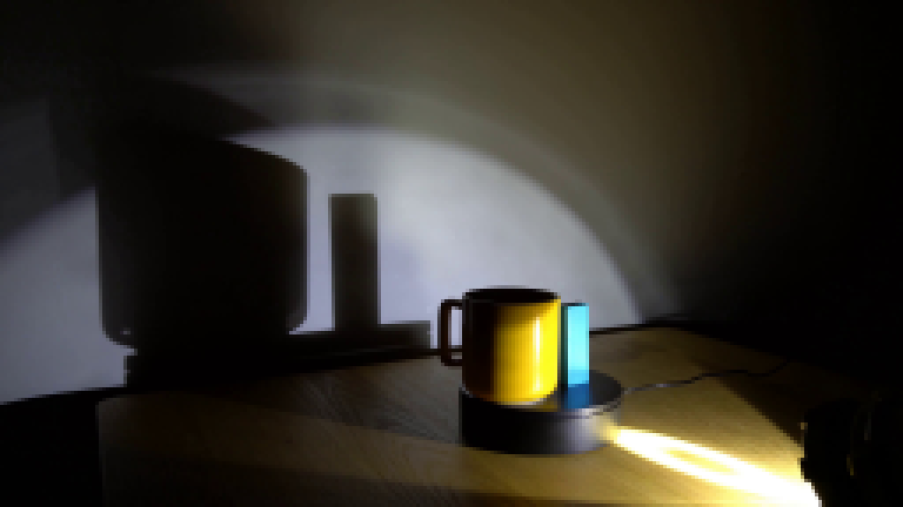
视觉工具实际返回图片 2
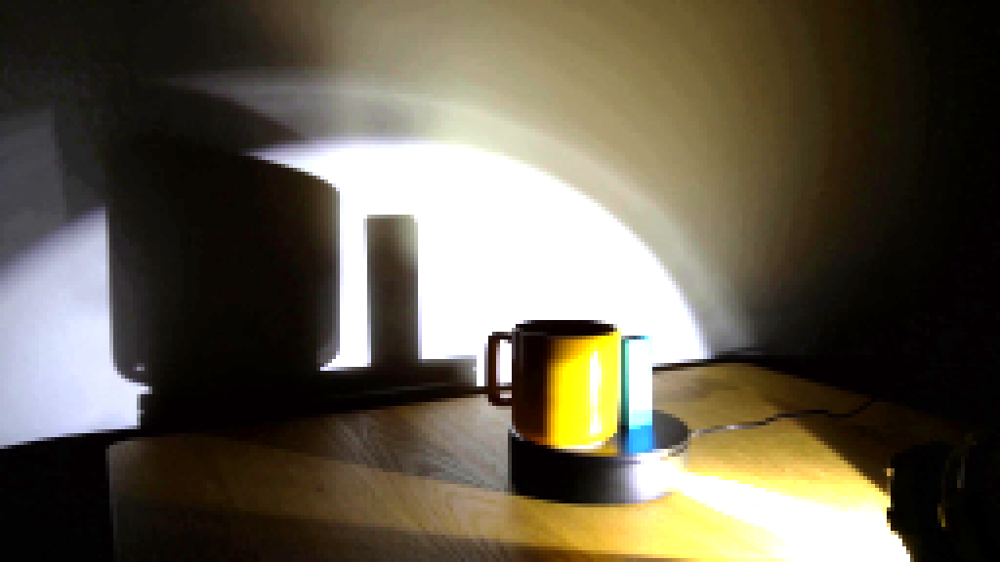
视觉工具实际返回图片 3
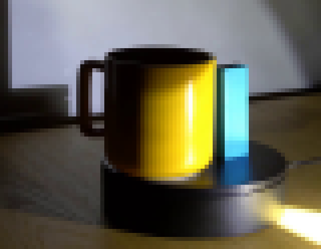
视觉工具实际返回图片 4
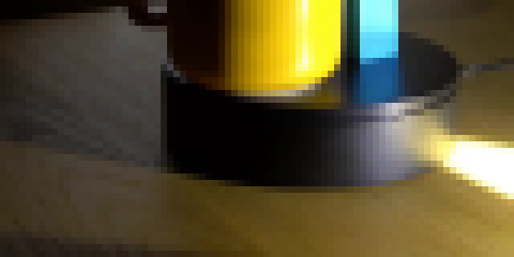
视觉工具实际返回图片 5
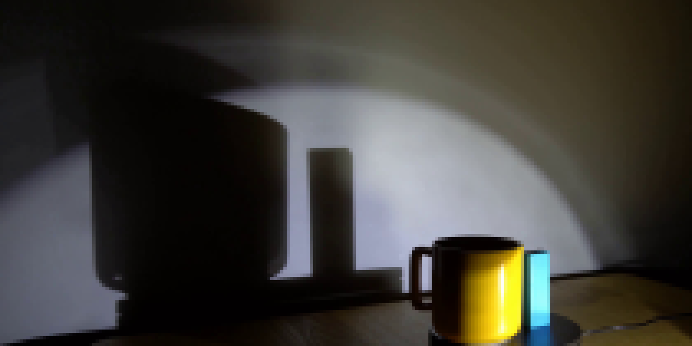
视觉工具实际返回图片 6
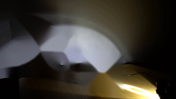
视觉工具实际返回图片 7
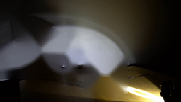
视觉工具实际返回图片 8
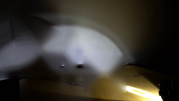
视觉工具实际返回图片 9
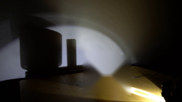
视觉工具实际返回图片 10
视觉工具实际返回图片 11
视觉工具实际返回图片 12
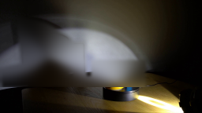
视觉工具实际返回图片 13
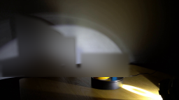
视觉工具实际返回图片 14
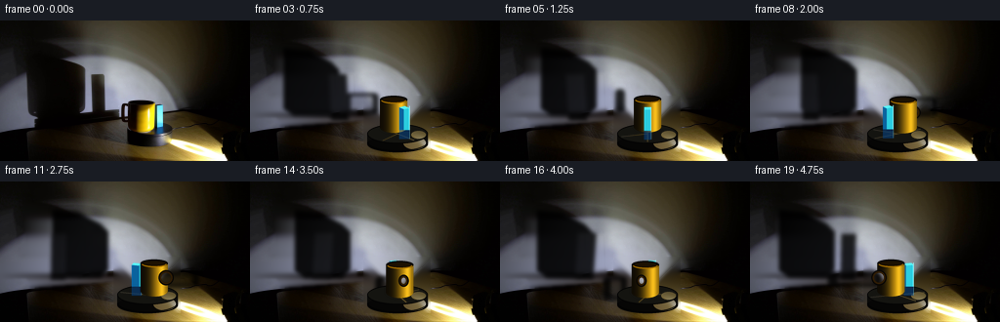
视觉工具实际返回图片 15
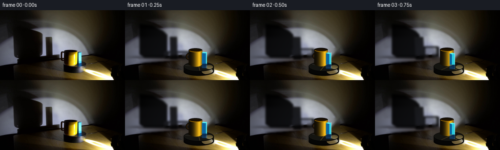
视觉工具实际返回图片 16
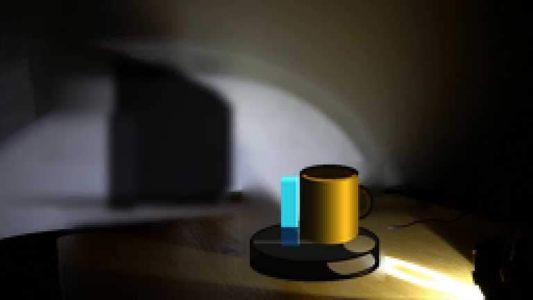
视觉工具实际返回图片 17
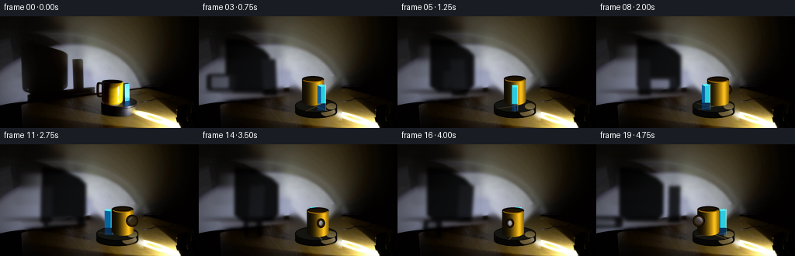
保存候选 2 份；完成命令 13 次；可验证图片返回 17 张。原始 API 响应与完整日志保留在本地。